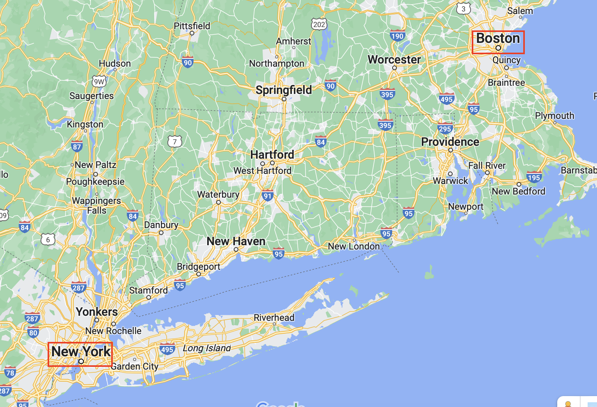
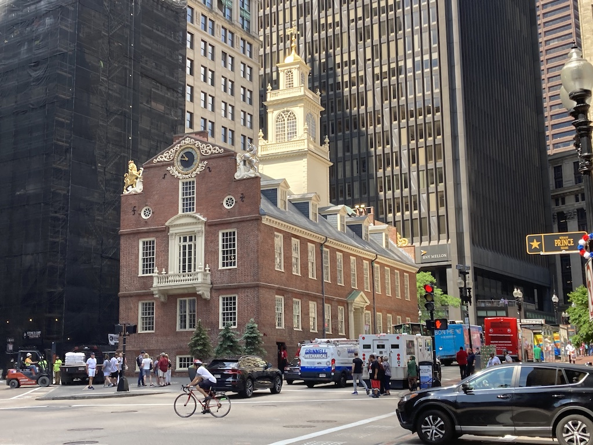
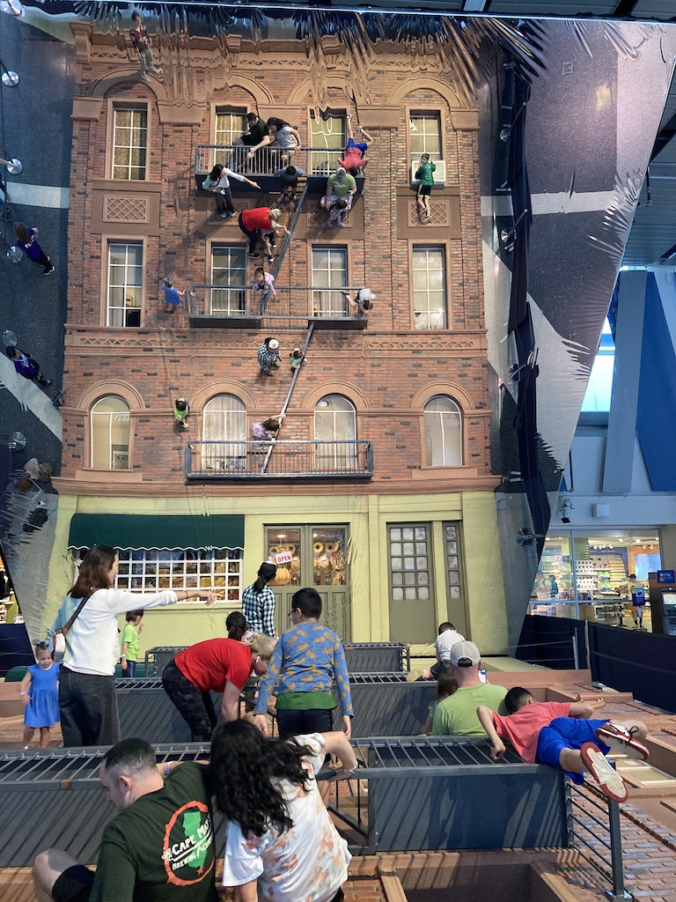
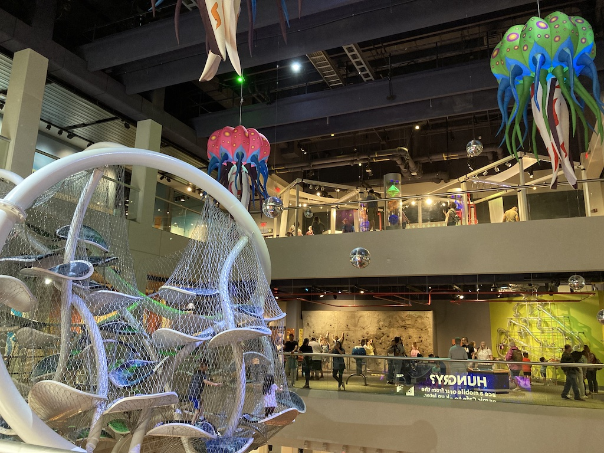
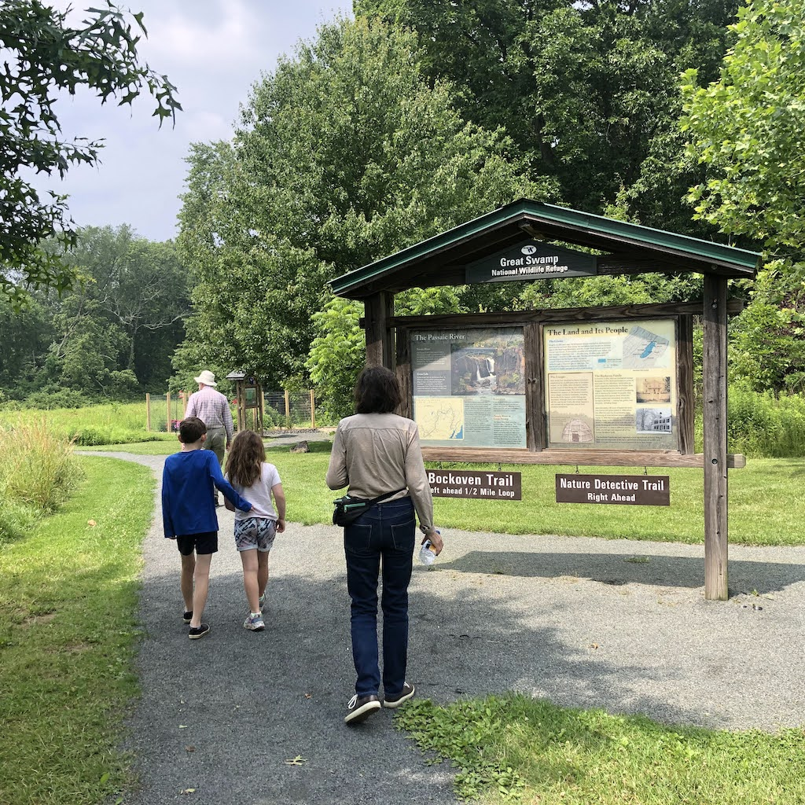
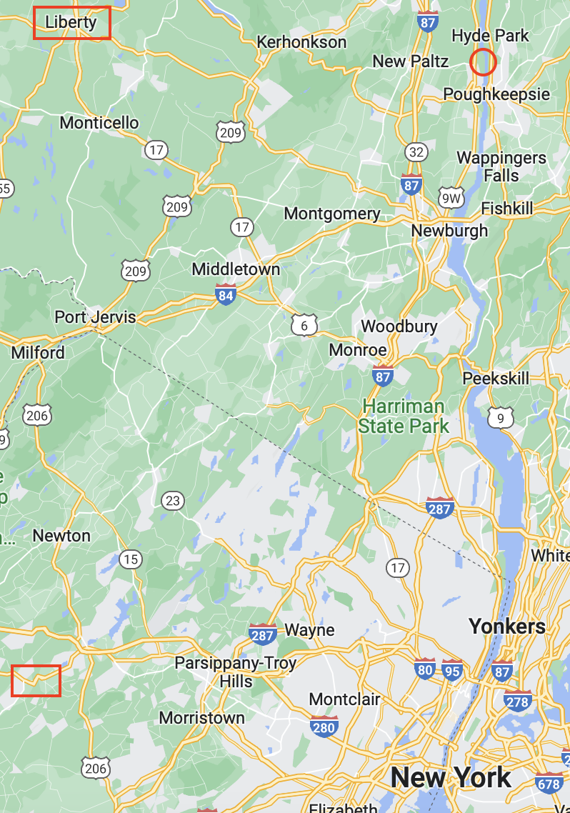
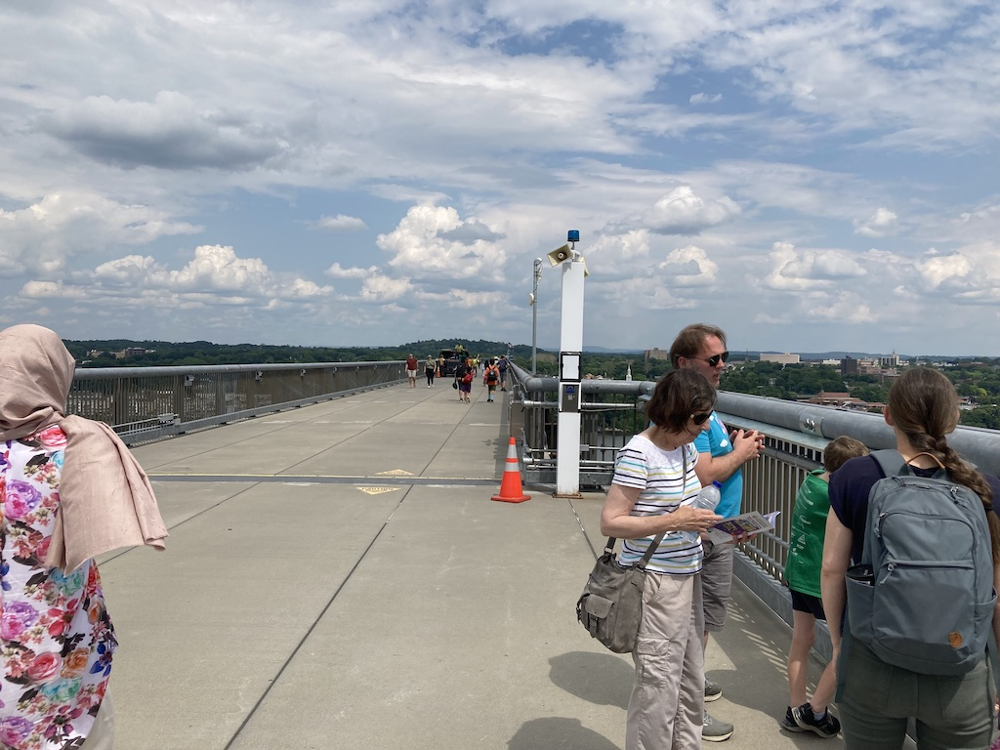
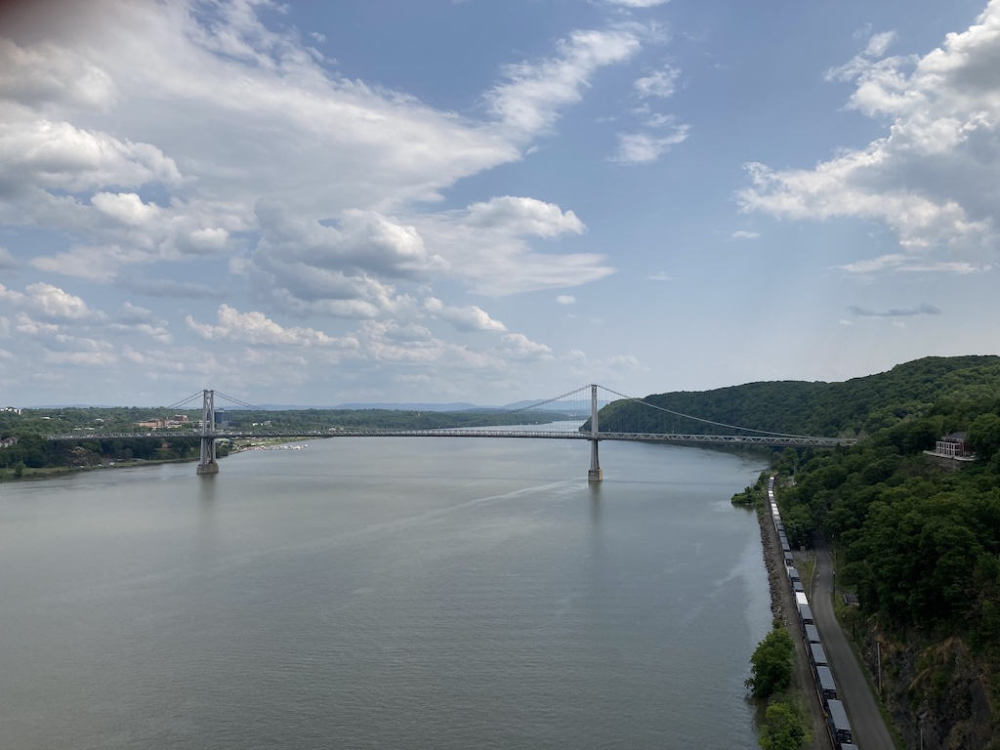
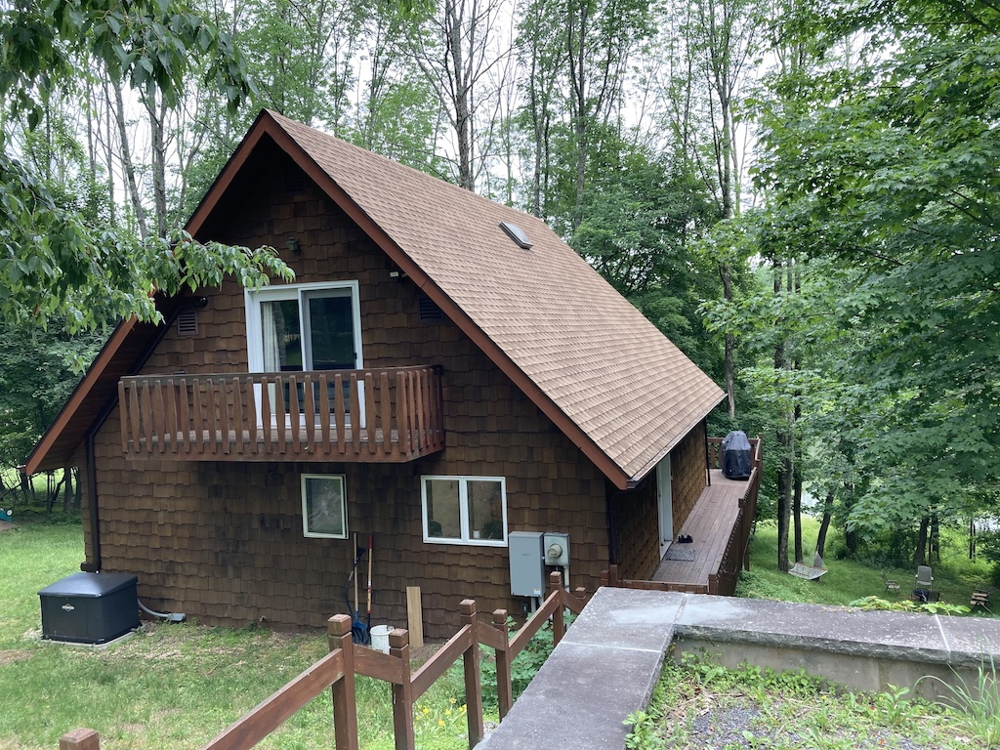

On Tuesday 13th June 2023 we were collected just after 9am and driven to Gatwick to catch an Iceland Air flight, firstly to Keflavik (the international airport near Reykjavik) and then on to Boston. Our plan was to spend three nights in Boston, then travel by train down to New York and out to Summit, where Victoria would meet us and take us to their house in Berkley Heights.
Our flights were pretty much on time, with only a short stop in Iceland, although our way of getting from Boston Logan airport to the hotel was not so clear. Luckily an off-duty bus driver got us on and off a free bus to the nearest T station (the Boston underground), from where we caught a train to the Aquarium stop, which was just opposite our hotel.
Boston
On our first morning in Boston we started with an expensive (but very good) breakfast in the restaurant that was attached to the hotel. Then we walked the Freedom Trail. It was a bit of a walk from the hotel in State Street to the start of the trail on Boston Common, but we then walked the entire length, stopping at each of the noted buildings (this is a phot of the Old State House). The first part was relatively easy, but crossing the Charles Bridge and walking up to the Bunker Hill Monument was a long, hot walk. Luckily we could do the other 'leg' of the trail to the USS Constitution in the Naval Yard and catch the ferry across the harbour to Long Wharf, which was near our hotel. So we had a late lunch in Quincy Market.
The next morning we went out for breakfast and then walked along the Rose Fitzgerald Kennedy Greenway (which was just around the corner from our hotel) to South Station. From there we caught the T to Harvard and did a self-guided tour of the old part of the campus. The photo above is the main library. The rest of the buildings were of red brick.
On Friday morning we again walked along the Greenway to South Station, this time to catch the Amtrak train to New York City. The train was comfortable, but packed and the journey took a little over four hours. It was sunny when we left Boston, but raining heavily when we reached New York. We had to cross 8th Avenue, from the Moynihan Train Hall to Penn Station to catch a New Jersey Transit train out to Summit, about a half hour journey. In spite of my phone refusing to make calls, my text got through and Victoria, Austin and Juniper were there to meet us.
Berkley Heights
You can see on the map that Berkley Heights is a little further west than Summit. However, the rail track splits just after Summit and so trains to Summit are more frequent. It was then only a 15 minute drive to Victoria and Brandon's house in Berkley Heights.
We finally worked out the layout of their house and went for a short walk around their (very manicured) neighbourhood.
Our time in Berkley Heights was mainly spent going out locally and walking in wooded areas, although, on our first Monday we all went off for a few days in the Catskill Mountains (see below). They have a large number of 'National Parks'. There are also 'National Historic Sites'. On one day we went to the Thomas Edison Historic Site, which was his research and development site. Although he invented the phonograph, he mainly improved existing inventions and then had a set of factories around the town to manufacture the resultant products.
On Tuesday, Brandon's birthday, the rest of us went off to the 'Liberty Science Centre' at Jersey City, just across the Hudson from Manhattan. It was a torturous drive there, but a very interesting place. There was a lot of interactive exhibits for children. In the entrance was the side of a building laying flat on the floor and a large mirror at 45°C to the ground. So when people lay on the ground, in the mirror it looked as though they were on the wall. If you look carefully at the photo you can see Austin (in a green tee-shirt) 'hanging' from a top-floor balcony.
In the early evening, because it was Brandon's birthday, we went to a restaurant in Berkley Heights. We had a very good meal, probably the best we've had in a restaurant on this trip.
Our flight on Thursday 29th June was not until 8:30, so we didn't need to leave Berkley Heights until just before five and so had time to go out. The plan was to go out at ten. However, we managed to get out by eleven and went to the 'Great Swamp', which was only about 20 minutes drive away. We started at the visitor centre and then walked around two short trails, the first, shorter one with, information boards, and then a half mile trail. Through the visitor centre window we saw humming birds coming for very quick drinks at some feeders.
After lunch (back home) we packed. Brandon got home in time to take us to the airport. It was a terrifying journey, luckily only about 35 minutes long. The road network has lanes coming and going in all directions and Brandon drives too fast and too close to the vehicle in front. Angela kept her eyes closed for most of the way.
We soon found the Icelandair desks, checked our cases and obtained boarding cards. Then it was security, which was busy but did not take long. We had a meal in an Italian restaurant inside the terminal and bought some food to eat on the journey. The flight to Iceland was a little delayed due to a late arrival, but that did not cause any problem.
We arrived in Iceland (at Heflevik airport) at around five local time, but in the early hours for us. I had watched a film en route (Long Story Short), Angela had read. We had an hour before our flight to Gatwick was due, so we ate our fruit and muffins. Although the queues at the gate looked chaotic, boarding was straight forward. Unfortunately, the Captain then said that UK air traffic control had stoped them from leaving, so we sat on the tarmac for an hour! Luckily it was another large plane (on the way out it had been a small plane with no seat-back screens), so I was able to watch another film, an odd one called 'The French Dispatch'. Angela again read. So we were about an hour late arriving at Gatwick at one o'clock. However, we were out with our bags by half past and only had to wait a few minutes for the taxi driver. So we were home by two thirty.
Liberty, New York State
On Monday 19th June we headed for Liberty, about three hours drive north, in New York State. However, Victoria and I had devised a round-about route, initially going to 'Walk Across the Hudson' (circled on the map), near New Paltz.
 It was a re-purposed railway bridge and was quite long, 1.25 miles across and 1.25 miles back. So we were in need of ice-cream when we got back. We had lunch in New Platz, at a place where we could get some gluten-free meals. Not only was the food poor, but we had to wait an hour because two large parties had just arrived.
Then we found that we had slightly miscalculated and it was still an hours drive across to Liberty. Although we could go into the chalet at four, it was more like six when we arrived.
As you can see from the photo, the chalet was set in woodland and the ground went down to a lake. Inside was spacious, with one bedroom and bathroom on the ground floor, two bedrooms and a bathroom on the first floor and another bedroom in a very large basement. We didn't use the basement. The only criticism was the lack of lights, although it took a couple of messages with the owner to get connected to the wifi.

The children's favourite part of the chalet was the hammock, down by the lake.
We tried a couple of parks, one of which was just up the road, and walked through woods.
We had a good start to our second day in Liberty by going to a waterfall, about half an hours drive away. Initially we walked the wrong way (up a steep hill) then discovered that we had missed the turn and it was only a couple of hundred yards from where we had started! However, we did see lots of wildlife, including a small lizard and some frogs.